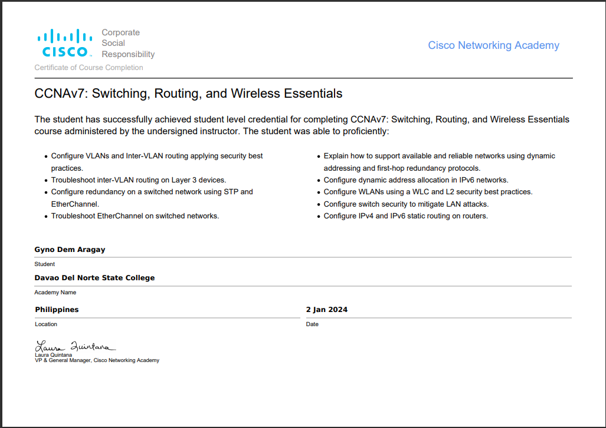
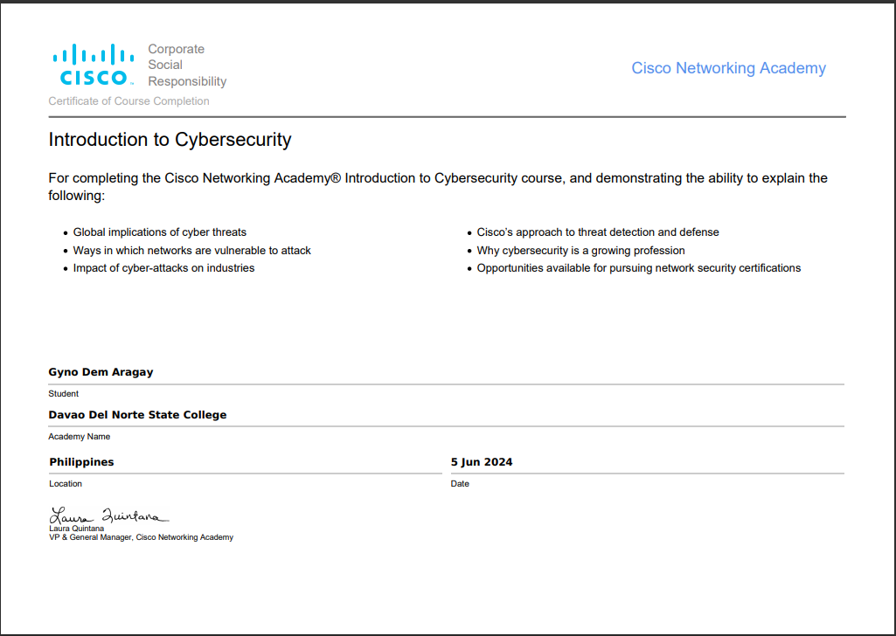
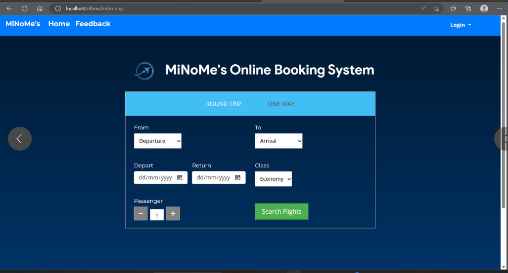
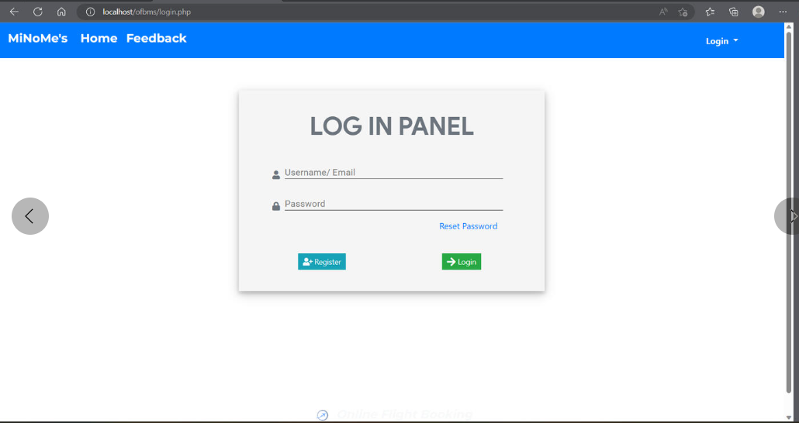
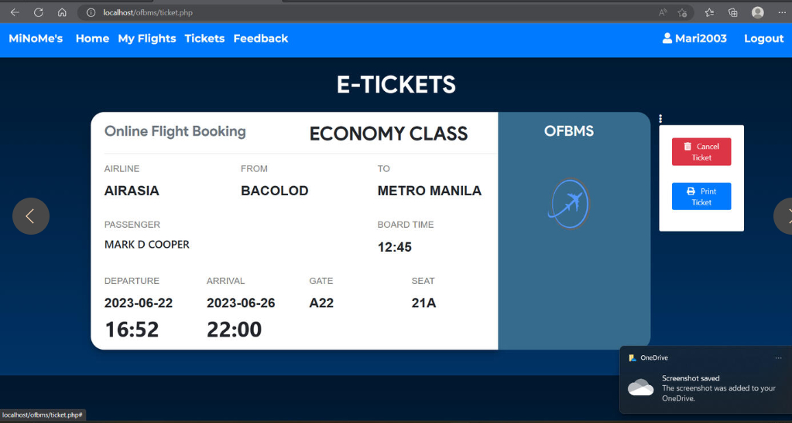

Portfolio
Certificates
 MiNoMe's Online Booking System
  "SWEEPSCAPES": YOUR ULIMATE GUIDE TO SWEET ESCAPE

Hi, I'm Gyno Dem Aragay,. Welcome to my portfolio.
[I am a Incoming 4th year Student in Bachelor in Science in Information Technology from Davao del Norte State College, I am Hardworking, highly motivated professional eager to lend combined knowledge and skills to enhance business performance. Operates well in both individual and team capacities, leveraging seasoned work ethic to quickly adapt to different processes and drive company objectives. Resourceful and results-driven with a passion for growth and efficiency to meet company needs and increase service value.]